Gallery
Each page is a working model: an animation you can scrub and steer, with claims that are re-checked by simulation as you move the sliders. Open one, drag a slider until a claim fails, and see where the explanation stops holding.
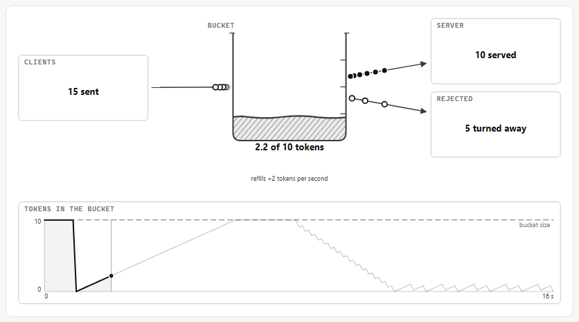
Token Bucket Rate Limiter
A bucket holds up to 10 tokens and refills at 2 per second. Each request spends one token; a request that finds less than one token is rejected. Bursts pass up to the bucket size, and sustained traffic is held to the refill rate.
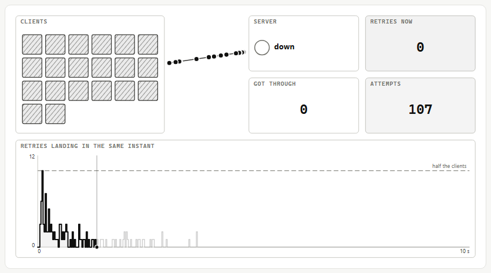
Exponential Backoff With and Without Jitter
20 clients lose their server at the same moment. Each retries after a wait that doubles every failure, capped at 2 seconds. With jitter, each wait is a random share of that limit, which breaks up the herd of synchronized retries.
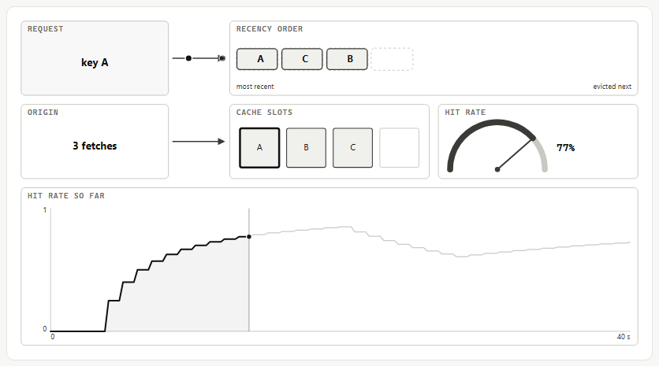
LRU Cache
A cache with 4 slots keeps the most recently used keys and evicts the least recently used one when it is full. A program loops over 3 hot keys, then a one-time scan of 5 new keys passes through.
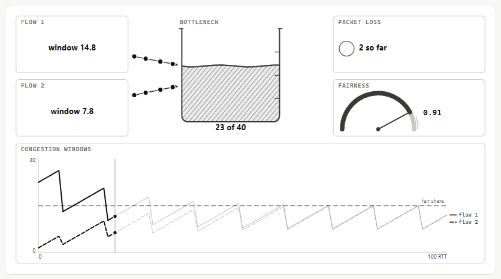
TCP AIMD: Two Flows Find a Fair Share
Two TCP senders share one bottleneck that carries 40 packets per round trip. Each round trip both add one packet to their window (additive increase); when together they overflow the link, both cut their window to 50% of its size (multiplicative decrease). Model assumptions: no buffer, and a loss hits both flows at once.
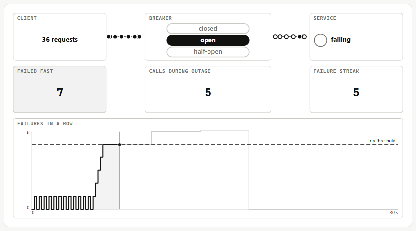
Circuit Breaker
A client calls a service five times a second through a circuit breaker. At first every other call fails, but never two in a row. After 5 failures in a row the breaker opens and fails calls at once, without touching the service. After a cooldown of 4 seconds it lets one trial call through (half-open): success closes it, failure opens it again. This breaker counts failures in a row, not the failure rate, so scattered failures never trip it; many libraries count failures over a time window instead.
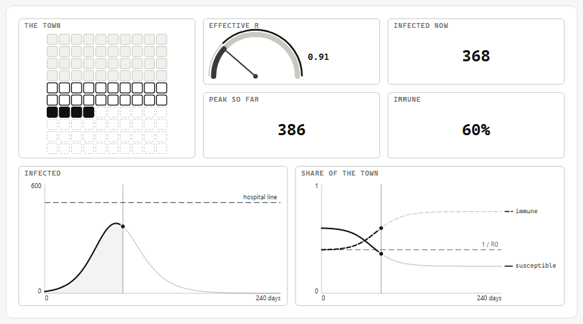
SIR Epidemic and Herd Immunity
A town of ten thousand people, with 40% vaccinated. Each infected person passes the infection on at a rate that makes R0 = 2.5 new cases in a fully susceptible town, and stays infectious for about 7 days. Model assumptions: everyone mixes evenly, recovery gives lasting immunity, the town is closed, and the hospital line is compared with everyone infected at once, as if each case needed a bed.
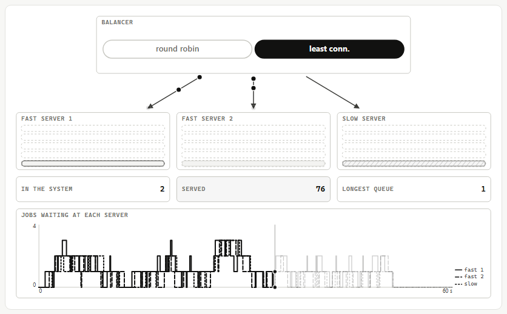
Round Robin vs Least Connections
A load balancer spreads random requests over three servers, and one of them works at only 40% of the speed of the others. Round robin takes turns no matter how busy each server is; least connections sends each request to the server with the fewest jobs. Requests arrive at random, about 2.5 per second, for fifty seconds.
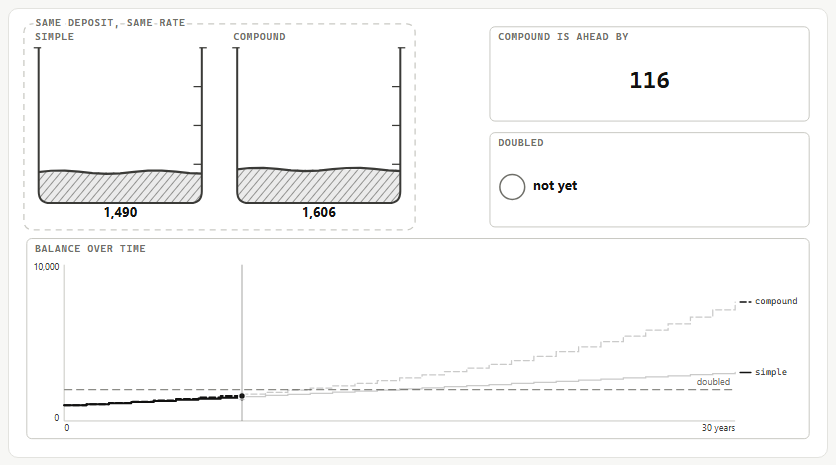
Compound vs Simple Interest
Two accounts start with the same deposit and earn 7% a year, paid once a year. Simple interest pays only on the original deposit; compound interest also pays on the interest already earned, so its payments keep growing.
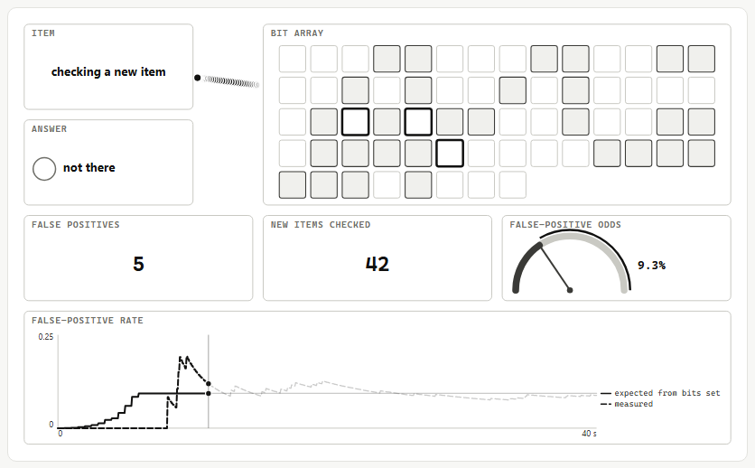
Bloom Filter False Positives
A Bloom filter stores 12 items in 64 bits. Adding an item sets 3 bits chosen by hash functions; checking an item looks at the same bits. If any is clear, the item was never added. If all are set, it was probably added, but those bits may have been set by other items: a false positive.
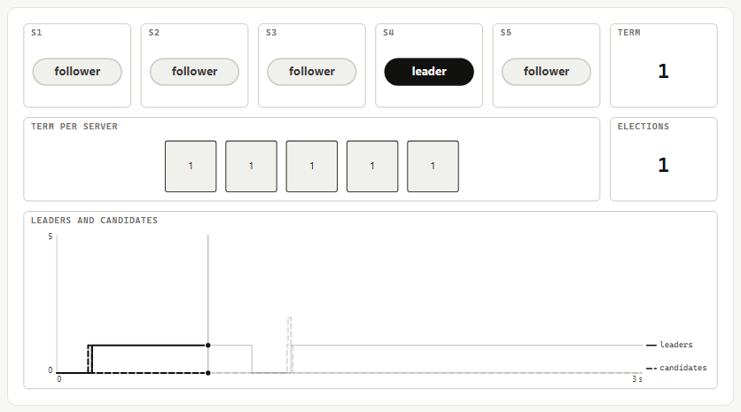
Raft Leader Election
Five servers. A follower that hears nothing from a leader for its election timeout, a random time between 150 and 300 ms, becomes a candidate and asks the others for votes; a majority makes it leader. Messages take 10 ms. At t = 1 s the leader crashes. Log replication is left out.
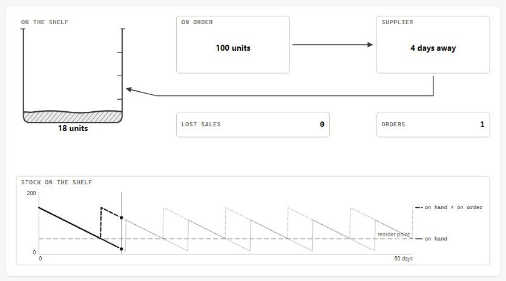
Inventory Reorder Point
A shop sells 10 units a day. When stock on hand plus stock on order falls to the reorder point of 50 units, it orders 100 more, which arrive 4 days later. Sales that find the shelf empty are lost.